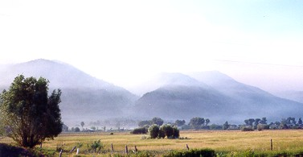
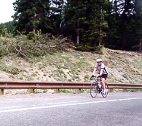
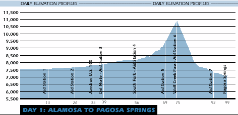
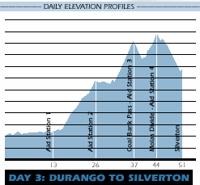
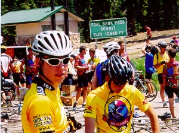
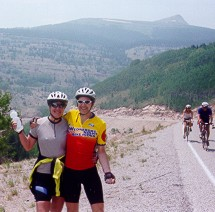
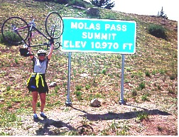

The ride this year was
challenging, and in parts, smoky. Pat and I sagged 21 miles the
second day to avoid biking in the smoke from the fires near
Durango. The route that day and the next was changed at the last
minute to avoid the worst of the smoke. In Durango, the Rockies
camp was near that of the exhausted fire fighting personnel. One
woman was kind enough to take a minute to give us the run down on the
conditions up the road after a night of fighting fire. "The
smoke near the road is not too bad," she told us.
We first encountered the smoke on the second day of the ride
from Pegosa Springs to Durango. The Denver Post Reported how the ride was
prepared to help 2,000 cyclists through the area that day and the next. "I know
we're going to have asthma attacks today; we started seeing that last
night with all the smoke," said paramedic Rodger Ames, president of
Stadium Medical, which supplies ambulances for the tour, the Post
reported.
 |
| Smoke from
the fire near Durango filled the east side of the valley which
was the original route for today. Paul Balaguer and his
army of volunteers spent the previous night moving the
route and aid stations to the west side of the valley to avoid
as much of the smoke as was possible. |
It would not be Ride the Rockies if there
weren't passes to climb but the climb on the first day of the tour was one of the more
difficult. Although there was just one big climb it came at about
sixty miles into a 99 mile day. When Pat and I climbed it, it was
hot and steep. I saw a number of people suffering from the effects
of altitude, exhaustion, and heat.
 |
 |
| Pat tops Wolf
Creek Pass well and finished this 99 mile day with good hard
efforts on the final short climbs (to the surprise of some of
the cyclists she overtook). |
Perhaps the biggest test on the tour would
come on the third day which took us from Durango to Silverton.
There are three significant climbs between the aid stations and the top
of Molas pass. For reasons described later, only Pat and I would
do the route as put down by the organizers. Tour director Paul
Balaguer had this advice for this leg of the tour, "Shortest day
of ride, but far from easiest. More than 6,000 feet to climb. Take it at
your pace. Don't work so hard you can't appreciate the stunning beauty
around you. Careful on descent into Silverton." Good
advice indeed. Even so, Pat and I found ourselves feeling rather
exhausted at Coal Bank Pass which is one pass short of calling it a day.
  |
| Adam and
David absorb the 18 miles of climbing behind them and
contemplate the climbing yet to come at the Coal Bank Pass rest
area. |
Rather than calling it a day at Coal Bank, Pat found
her second wind after a rest and some food. She climbed the
last few miles to Molas Pass as well as she climbed the first. I
was absolutely thrilled because completing today was a real
accomplishment.
  |
| Pat and I are
feeling good just a couple of miles before Molas Pass, however,
after this photo the road turned upward more steeply making the
final bits more effort than expected. Pat celebrates the
accomplishment (and her weight training) by lifting her bike high
above her head. |
As important as the climbs are to create
the challenge of Rockies, the descents are for creating the thrill.
This thrill, however, is not without it's risks. Below is an
excerpt from the Denver Post:
The ascent up Red Mountain Pass, on Day
Four of Ride The Rockies, provided 2,000 cyclists with some of the
most stunning views of this seven-day cycling tour. It also was one of
the more dangerous.
In 14 miles, riders descended 3,500
feet, competing for space with cars and trucks on more than a dozen
steep, hairpin turns. Many riders, pushing the limits of the official
speed (25 mph) and common sense, clocked speeds above 50 mph.
"Roads like this, there's the
potential for something catastrophic," said Rodger Ames, lead
paramedic on the tour and president of Stadium Medical.
"This stuff makes me nervous.
All these cars, all these bikes and these people," he said.
To Ames' surprise, only a few riders
were injured on Wednesday's 60-mile ride from Silverton to Montrose.
For the first time in our groups nine
years of Colorado tours, we had a crash. It was on day three,
Durango to Silverton, that Evan ran out of road while overtaking slower
cyclists on a turn. His unplanned tumble into a rock wall resulted
in mostly minor injuries and a pair of wrecked wheels. His hip
sustained the worst of the damage and he was in considerable pain that
night but biked the rest of the tour in relative comfort, considering his
injuries.